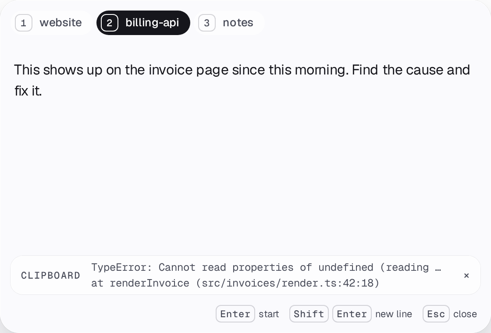

Hotkey
Press a key, type the task
A small pop-up opens in the middle of the screen with whatever you just copied already attached: text, or a screenshot. Pick a workspace, type what you want done, press Enter, and go back to what you were doing. The agent works in the background.
CtrlAltSpace on Windows and Linux, CmdShiftSpace on a Mac
